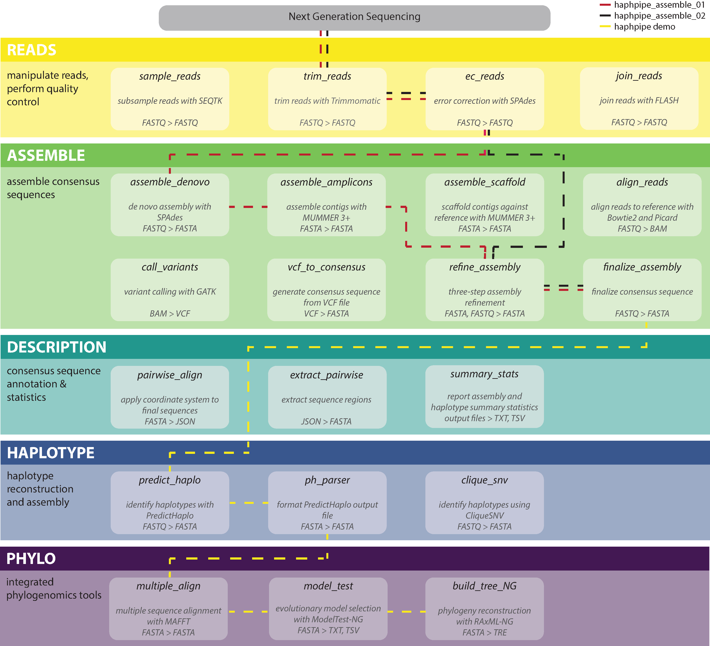

About HAPHPIPE
HAplotype and PHylodynamics pipeline for viral assembly, population genetics, and phylodynamics.

We assume basic familiarity with conda environments, basic bash knowledge and knowledge of general next-generation sequencing (NGS) concepts. For more information regarding all of these, see helpful links and FAQ. (insert links to markdown pages once these are split up) Remember that a directory is a simply a folder nesting system, similar to what you see on your computer. Where you see "folder" below you can also say "directory."
HAPHPIPE is intended only for Linux and Mac OS X platforms.
This User Guide was developed by undergrads and graduate students to be accessible for users at all stages. Maggie Steiner, Keylie M Gibson, Matthew L Bendall, and Uzma Rentia all contributed to developing this User Guide and testing HAPHPIPE.
See paper for more information and paper for validation study.
Citing HAPHPIPE
When using HAPHPIPE, please cite our article when it is available. For now, reference the GitHub website: https://github.com/gwcbi/haphpipe
The HAPHPIPE suite
Each stage can be run on its own. Stages are grouped into 4 categories: hp_reads, hp_assemble, hp_haplotype, and hp_annotate.
More detailed description of command line options for each stage are available in the below sections. To view all available stages in HAPHPIPE, run:
haphpipe -h
Output will look like:
Program: haphpipe (haplotype and phylodynamics pipeline)
Version: 0.8.1
Commands:
-- Reads
sample_reads subsample reads using seqtk
trim_reads trim reads using Trimmomatic
join_reads join reads using FLASh
ec_reads error correct reads using SPAdes
-- Assemble
assemble_denovo assemble reads denovo
assemble_amplicons assemble contigs to amplicon regions
assemble_scaffold assemble contigs to genome
align_reads align reads to reference
call_variants call variants
vcf_to_consensus create consensus sequence from VCF
refine_assembly iterative refinement: align - variants - consensus
finalize_assembly finalize consensus sequence
-- Haplotype
predict_haplo assemble haplotypes with PredictHaplo
ph_parser parse output from PredictHaplo.
-- Annotate
pairwise_align align consensus to an annotated reference
extract_pairwise extract sequence regions from pairwise alignment
annotate_from_ref annotate consensus from reference annotation
-- Miscellaneous
demo setup demo directory and test data
HAPHPIPE consists of a suite of sub-commands under each stage that are invoked as follows:
haphpipe [stage] [sub-command] [options]
For example, to join paired end reads, one would invoke the following:
haphpipe join_reads --fq1 trimmed_1.fastq --fq2 trimmed_2.fastq